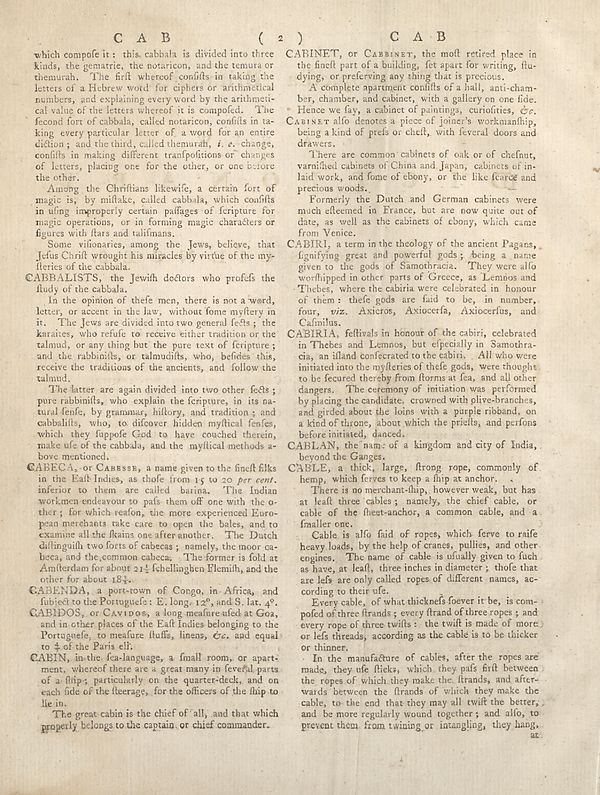

Scan ID britannica:309f765b1ecc83e0a7f7762e44b4a927a7555443:train:2464
Image SHA-256 24f450326eee13b008306d2b355bd49b295db96603186268db20b85552cf958e
Status: ok. Running header: none (none). Removed page furniture: Page-footer: az:.
PDF · raw Parse reply · LaTeX
Entries: E0220 CABBALISTS CABECA CABENDA CABIDOS CABIN CABINET CABIRI CABIRIA CABLAN CABLE

| # | Class | Box | Parse 3.5 | Used text | Source |
|---|---|---|---|---|---|
| 0 | Section-header | [0.1875, 0.0375, 0.748, 0.0563] | C A B ( 2 ) C A B | C A B ( 2 ) C A B | super_vl |
| 1 | Text | [0.0518, 0.0602, 0.4619, 0.2297] | which compole it a this cabbula is divided into three kinds, the gemartie, the uncommon, and the tenuta or themurah. The fifth whereof confits in taking the letters of a Hebrew word for ciphers or arithmetical numbers, and explaining every word by the arithmetic caling of the letters wherein it is composed. The fecond fort of cabbals, called notaricon, confits in takking every particular letter of a word for an entire edition; and the third, called themumafi, _I.e._ changes, confits in making different transfodions or changes of letters, placing one for the other, or one before the other. | which compose it : this cabbala is divided into three kinds, the gematrie, the notariicon, and the temura or themurah. The first whereof consists in taking the letters of a Hebrew word for ciphers or arithmetical numbers, and explaining every word by the arithmetical value of the letters whereof it is composed. The second sort of cabbala, called notariicon, consists in taking every particular letter of a word for an entire diction; and the third, called themurah, i. e. change, consists in making different transpositions or changes of letters, placing one for the other, or one before the other. | super_vl |
| 2 | Text | [0.0537, 0.2313, 0.4609, 0.3008] | Among the Christians likewise, a certain fort of magic is, by miflake, called cabbula, which confits in using improper certain puffages of ferripture for magic operations, or in forming magic characters or figures with flars and talifiments. | Among the Christians likewise, a certain fort of magic is, by mistake, called cabbala, which consists in using improperly certain passages of scripture for magic operations, or in forming magic characters or figures with stars and talismans. | super_vl |
| 3 | Text | [0.0547, 0.3016, 0.46, 0.3422] | Some vitanaries, among the Jews, believe, that Jesus Christ through his miracles by virtue of the my-flerts of the cabbala. | Some visionaries, among the Jews, believe, that Jesus Christ wrought his miracles by virtue of the mysteries of the cabbala. | super_vl |
| 4 | Text | [0.0381, 0.343, 0.459, 0.3758] | CABBALLISTS, the Jewish doctors who profels the fluly of the cabbals. | CABBALISTS, the Jewish doctors who profess the fludy of the cabbala. | super_vl |
| 5 | Text | [0.0527, 0.3766, 0.4629, 0.4813] | In the opinion of thefe men, there is not a word, letter, or accent in the law, without fome mystery in it. The Jies are divided into two general feels, the karaice, who refute to receive either tradition or the talmud, or any thing but the pure text of ferripture; and the rabbinills, or talmudits, who, befedes this, receive the traditions of the ancients, and follow the talmud. | In the opinion of these men, there is not a word, letter, or accent in the law, without some mystery in it. The Jews are divided into two general sects; the karaites, who refuse to receive either tradition or the talmud, or any thing but the pure text of scripture; and the rabbinists, or talmudists, who, besides this, receive the traditions of the ancients, and follow the talmud. | super_vl |
| 6 | Text | [0.0508, 0.4836, 0.4639, 0.5797] | The latter are again divided into two other fields; pure rabbinills, explain the ferripure, in its a rural feeling, by grammar, history, and traditions, and cabbullits, who, to difcover hidden mythical fenles, which, they foppefe God to have coached therein, make all of the cabbals, and the mythical methods at bove mentioned. | The latter are again divided into two other feets; pure rabbinifts, who explain the scripture, in its natural sense, by grammar, history, and tradition; and cabbalifts, who, to discover hidden mystical fenfes, which they suppose God to have couched therein, make use of the cabbala, and the mystical methods above mentioned. | super_vl |
| 7 | Text | [0.04, 0.582, 0.4648, 0.7352] | GABENIA, a professor name given to the finest films in the Half Indies, as she from Iow to so per order inferior to them are called barins. The Indian workmans endeavor to pafs them off one with the o-ther, far which reston, the more experienced European merchant take care to open the bales, and to examine all the flains one after another. The Dutch dhlfiguille two forms of cheeks, namely, the more ca-bets, and the common causes. The former is full at Amifterdam for about 215 fechellingen Elemith, and the other for about 184. | CABECA, or CABESSE, a name given to the finest silks in the East Indies, as those from 15 to 20 per cent. inferior to them are called barina. The Indian workmen endeavour to pass them off one with the other; for which reason, the more experienced European merchants take care to open the bales, and to examine all the skeins one after another. The Dutch distinguish two sorts of caceas; namely, the moor cacea, and the common cacea. The former is sold at Amsterdam for about 21½ schellingen Flemish, and the other for about 18½. | super_vl |
| 8 | Text | [0.041, 0.7359, 0.4658, 0.7641] | CABENIA, a pre-town of Congo, in Africa, and fubied to the Portuguese: E. Long-129, and B. lat. 4. | CABENDA, a port-town of Congo, in Africa, and subject to the Portuguese: E. long. 12°, and S. lat. 4°. | super_vl |
| 9 | Text | [0.043, 0.7648, 0.4668, 0.8195] | CABIDOS, or CAXIVOS, a long mesmer called at Goa, and in other places of the Rall India belonging to the Portuguele, no mesure fluffs, linens, Gv, and equal to 40 the Paris elt. | CABIDOS, or CAVIDOS, a long measure used at Goa, and in other places of the East Indies belonging to the Portuguese, to measure stuffs, linens, &c. and equal to ½ of the Paris ell. | super_vl |
| 10 | Text | [0.042, 0.8203, 0.4678, 0.8898] | CABIN, in the fea-language, a final room, or apartment, whereby there are a great many in fewelful parts of a flip, particularly on the quarter-deck, and on each side of the fleerage, for the officers of the flip to lie in. | CABIN, in the sea-language, a small room, or apartment, whereof there are a great many in several parts of a ship; particularly on the quarter-deck, and on each side of the forecastle, for the officers of the ship to lie in. | super_vl |
| 11 | Text | [0.0723, 0.8906, 0.4688, 0.9211] | The great cabin is the chief of ’all, and that which properly belongs to the captain, or chief commander. | The great cabin is the chief of all, and that which properly belongs to the captain, or chief commander. | super_vl |
| 12 | Text | [0.4756, 0.0594, 0.8955, 0.1039] | CABINET, or CazBISY, the molt retired place in the finer part of a building, fet spart for writing, flu- dying, or preserving any thing that is precious. | CABINET, or Cabinet, the most retired place in the finest part of a building, set apart for writing, studying, or preserving any thing that is precious. | super_vl |
| 13 | Text | [0.4766, 0.1047, 0.8965, 0.1859] | A complete apartment conflicts of a hall, anti-cham- biz, chamber, and cobots, with a gallery on one files. Hence day, a number of paintings, curtains, ev. CAIBERT also denotes a piece of journer's workmanflap, being a kind of prels or cheft, with several doors and drawers. | A complete apartment consists of a hall, anti-chamber, chamber, and cabinet, with a gallery on one side. Hence we say, a cabinet of paintings, curiosities, &c. CABINET also denotes a piece of joiner's workmanship, being a kind of press or chest, with several doors and drawers. | super_vl |
| 14 | Text | [0.4775, 0.1875, 0.8975, 0.243] | There are common cabinets of oak or of chefnut, varnified cabbers of China and Japan, cabinets of in- leaf work, and fone of ebony, or the like force and precious woods. | There are common cabinets of oak or of chestnut, varnished cabinets of China and Japan, cabinets of inlaid work, and some of ebony, or the like scarce and precious woods. | super_vl |
| 15 | Text | [0.4785, 0.2437, 0.8984, 0.2992] | Formerly the Dutch and German cabinets were much allemented in France, but are now quite out of fibre, as well as the cabinets of ebony, which came from Venice. | Formerly the Dutch and German cabinets were much esteemed in France, but are now quite out of date, as well as the cabinets of ebony, which came from Venice. | super_vl |
| 16 | Text | [0.4795, 0.3, 0.8945, 0.4102] | CABIRI, a term in the biology of the ancient Pagars, figuring great and powerful gods, being a name given to the gods of Samotbracia. They were allo worthipped in other parts of Greece, as Lemos and Thehees, where the cabinets were celebrated in honour of them; the fests go are laid to be, in number, four, viz. Axieros, Axiocerla, Axiocerfius, and Calinila. | CABIRI, a term in the theology of the ancient Pagans, signifying great and powerful gods; being a name given to the gods of Samothracia. They were also worshipped in other parts of Greece, as Lemnos and Thebes, where the cabiria were celebrated in honour of them: these gods are said to be, in number, four, viz. Axieros, Axioerfa, Axioerfus, and Cafinilus. | super_vl |
| 17 | Text | [0.4805, 0.4117, 0.8994, 0.5523] | CABIRI, fellirals in honour of the cabrii, celebrated in Thebes and Lemnos, but especially in Samotbra- cis, an island conferred to the cabin. All who were initiated into the welfare of the fests, gods, were fought to be featured thereby from florms at tea, and all other dangers. The economy of imitation was performed by placing the candidate, crowned with white-hemches, and grilled about the hons with a purple riband, on a kind of throne, about which the priets, and prisons before initiated, denoted. | CABIRIA, festivals in honour of the cabiri, celebrated in Thebes and Lemnos, but especially in Samothracia, an island consecrated to the cabiri. All who were initiated into the mysteries of these gods, were thought to be secured thereby from storms at sea, and all other dangers. The ceremony of initiation was performed by placing the candidate, crowned with olive-branches, and girded about the loins with a purple ribband, on a kind of throne, about which the priests, and persons before initiated, danced. | super_vl |
| 18 | Text | [0.4814, 0.5531, 0.8936, 0.5813] | CABILAN, the man of a kingdom and city of India, beyond the Ganges. | CABLAN, the name of a kingdom and city of India, beyond the Ganges. | super_vl |
| 19 | Text | [0.4824, 0.5828, 0.9004, 0.6078] | CABLE, a thick, large, frong rope, commonly of horn, which fever to keep a flap at anchor. | CABLE, a thick, large, strong rope, commonly of hemp, which serves to keep a ship at anchor. | super_vl |
| 20 | Text | [0.4834, 0.6094, 0.9014, 0.7484] | There is no merchant-thup, however weak, but has at half three cables; namely, the chief cable, or cable of the flies-anchor, a common cable, and a finaler on<y_0.6633><class_Text> <x_0.4844><y_0.6648>Cable is alfo fluid of ropes, which fever to nife heavy loads, by the help of Granatry pulling, and other engines. The name of cable is finally given to dish as have, at leal, three inches in diameter; thofe that are left as one only called ropes of different names, according to their site. | There is no merchant-ship, however weak, but has at least three cables; namely, the chief cable, or cable of the fleet-anchor, a common cable, and a smaller one. Cable is also said of ropes, which serve to raise heavy loads, by the help of cranes, pullies, and other engines. The name of cable is usually given to such as have, at least, three inches in diameter; those that are less are only called ropes of different names, according to their use. | super_vl |
| 21 | Text | [0.4854, 0.7492, 0.9023, 0.8187] | Every cable, of what thickness forever it be, is com-poded of three friends, every friend of three ropes; and every rope of three twiffs - the twill is made of more or leds thread, according as the cable is to bo thicker or thinner. | Every cable, of what thickness soever it be, is composed of three strands; every strand of three ropes; and every rope of three twists: the twist is made of more or less threads, according as the cable is to be thicker or thinner. | super_vl |
| 22 | Text | [0.4863, 0.818, 0.9043, 0.9195] | In the manufacture of cables, after the ropes are made, they ufe flicks, which they pails frit between the ropes of which they make the lizards, and afterwards between the frants of which they make the cable, to the cell that they may all twill the better, and be more regularly wound together; and alfo, to prevent them from twinning or intangling, they hang. | In the manufacture of cables, after the ropes are made, they use flicks, which they pass first between the ropes of which they make the strands, and afterwards between the strands of which they make the cable, to the end that they may all twist the better, and be more regularly wound together; and also, to prevent them from twining or intangling, they hang | super_vl |
Britannica scans: National Library of Scotland, CC0 1.0. Wikipedia text: Wikipedia contributors, CC BY-SA 4.0, revision links on each page. Generated 2026-10-18T13:26:14+00:00.